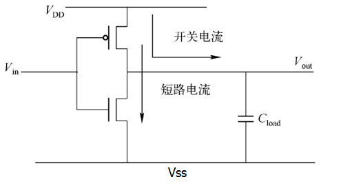
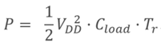
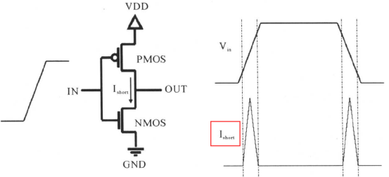
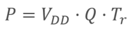
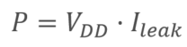
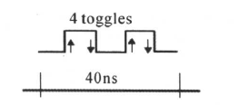
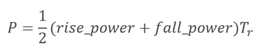

关键词：开关功耗，内部功耗，静态功耗
功耗影响
便携性
功耗越低，同等电量下电子产品工作时间越长，便携性设备的电池容量和体积设计的困难度也会降低。例如，手机越做越薄，性能还不受影响，就是因为低功耗设计发挥了至关重要的作用。
性能
功耗越大，耗能越多，产生的热量越多，各器件的工作性能就会受到影响。例如，手机使用时间较长时，会感觉手机发热，而且各应用软件也会出现卡顿的现象。
成本
不考虑低功耗设计时，一个功能的实现方法可能较为繁琐，实现的器件增多，产品面积增大；同时，功耗过大时，就要考虑散热装置，这又增加了组装成本。 总之，低功耗设计有很多的优点，也是以后数字设计的发展趋势。
功耗类型
功耗类型一般可分为动态功耗、静态功耗和浪涌功耗。
动态功耗
动态功耗主要包括开关功耗（又称为翻转功耗）和短路功耗（又称为内部功耗）。
1、开关功耗
在 CMOS 数字电路中，对负载电容进行充放电时消耗的功耗为开关功耗。如下 CMOS 非门:

当 Vin = 0 时，上面的 PMOS 导通，下面的 NMOS 截止；VDD 对负载电容 Cload 进行充电。充电完成后，Vout 的电平为高。
当 Vin = 1 时，上面的 PMOS 截止，下面的 NMOS 导通，负载电容通过 NMOS 进行放电。放电完成后，Vout 的电平为低。
这样一开一闭的变化，即电源的充放电，就形成了开关功耗。开关功耗的计算公式如下所示：

其中，VDD 为供电电压，Cload 为后级电路等效的负载电容，Tr 为输入信号的翻转率。
2、短路功耗
信号的翻转不是在瞬时完成的。因此，在输入信号进行翻转时，PMOS 和 NMOS 总有一段时间是同时导通的，那么从电源 VDD 到地 VSS 之间就有了通路，形成短路电流，产生短路功耗。如下反相器电路图所示：

短路功耗的计算公式如下：

其中，Vdd 为供电电压，Tr 为翻转率，Q 为一次翻转过程中从电源流到地的电荷量。
静态功耗
在 CMOS 电路中，静态功耗主要是漏电流引起的功耗，往往与工艺有关。

漏电流的组成主要为：PN 结反向电流 I1、源极和漏极之间的亚阈值漏电流 I2、栅极漏电流（包括栅极和漏极之间的感应漏电流 I3）、栅极和衬底之间的隧道漏电流 I4。
一般情况下，漏电流主要是指栅极泄漏电流和亚阈值电流。对于超深亚微米工艺，隧道漏电流成为主要电流之一。
- 1、在 PN 结两端加反向电压时，P 区空穴和 N 区电子的运动相反，没有电流通过，二极管处于截止状态，部分能量较大的空穴和电子会挣脱反向电场的束缚而形成微弱的漂移电流。
- 2、栅极泄漏功耗：在栅极加上信号后（即栅压），栅级到衬底之间会存在电容，因此在栅衬之间就会存在有电流，由此就会存在功耗。
- 3、 亚阈值电流：栅极电压低于导通阈值，仍会产生从漏极到源极的泄漏电流。此电流称为亚阈值泄漏电流。在较狭窄的晶体管中，漏极和源极距离较近的情况下会产生亚阈值泄漏电流。晶体管越窄，泄漏电流越大。要降低亚阈值电流，可以使用高阈值的器件，还可以通过衬底偏置增加阈值电压，这些也属于低功耗设计的考虑范畴。
- 4、隧道漏电流：属于量子力学范畴，感兴趣的同学可自行查阅。
静态功耗的计算公式如下：

浪涌功耗
浪涌功耗是浪涌电流引起的功耗。浪涌电流是指开机或者唤醒时，器件流过的最大电流，因此浪涌电流也称为启动电流。浪涌功耗不是本次所讨论的内容。
功耗模型
library 信息
下面是一种 library 工艺的前几行代码描述，包含功耗有关的参数，具体含义在注释中说明。
实例
/* library head: xxx */
technology (cmos) ;
simulation : true ;
nom_process : 1 ;
nom_temperature : -40; //默认温度
nom_voltage : 0.81; //默认电压
voltage_map(VDD, 0.81); //定义lib中多个电压，包括以下几行
voltage_map(TVDD, 0.81);
voltage_map(VDDDST, 0.81);
voltage_map(VDDGR, 0.81);
voltage_map(VDDSRC, 0.81);
voltage_map(VSS, 0);
operating_conditions("ssg0p81vm40c"){ //一种corner定义
process : 1; /* SSGlobalCorner_LocalMC_MOS_MOSCAP-SSGlobalCorner_LocalMC_RES_BIP_DIO_DISRES */
temperature : -40;
voltage : 0.81;
tree_type : "balanced_tree";
}
default_operating_conditions : ssg0p81vm40c ;
capacitive_load_unit (1,pf) ; //定义电容单位
voltage_unit : "1V" ; //定义电压单位
current_unit : "1mA" ; //定义电流单位
time_unit : "1ns" ; //定义时间单位
pulling_resistance_unit : "1kohm";
define_cell_area (pad_drivers,pad_driver_sites) ;
……
cell 信息
一个 library 中会有多个基本功能单元，用关键字 cell 声明，也包含了多种功耗信息。
实例
area : 0.392;
cell_footprint : "an2d1";
pg_pin (VDD) { //电源引脚
pg_type : primary_power;
voltage_name : VDD;
}
……
pin(A1) { //输入信号引脚
driver_waveform_fall : "tcbn22ullbwp7t40p140ssg0p81vm40c:fall";
driver_waveform_rise : "tcbn22ullbwp7t40p140ssg0p81vm40c:rise";
direction : input;
related_ground_pin : VSS; //输入引脚地端
related_power_pin : VDD; //输入引脚电压
capacitance : 0.000418924 ; //输入引脚电容
……
}
pin(Z) {
direction : output;
power_down_function : "!VDD + VSS";
function : "(A1 A2)";
related_ground_pin : VSS; //输出引脚地端
related_power_pin : VDD; //输出引脚电压
max_capacitance : 0.04182; //输出引脚最大电容
min_capacitance : 0.00013; //输出引脚最小电容
……
}
此时，如果再知道翻转率，就可以计算出动态功耗。
翻转率(Toggle rate，Tr)，指单位时间内信号(包括时钟、数据等信号) 的翻转次数。如下所示，信号在 40ns 时间内跳转了 4 次，则翻转率为 Tr = 4/4ns = 0.1GHz。

内部功耗信息
cell 定义中，内部功耗会有如下定义。
实例
related_pin : "A1" ;
related_pg_pin : VDD ;
rise_power(power_template_8x8) { //内部功耗查找表
index_1("0.0026, 0.0101, 0.0252, 0.0553, 0.1155, 0.236, 0.4769, 0.9587");
index_2("0.00013, 0.00046, 0.00112, 0.00243, 0.00506, 0.01031, 0.02081, 0.04182");
values ( \
"0.000249215, 0.000254481, 0.000262354, 0.000261007, 0.00026381, 0.000277799, 0.000304295, 0.000345046", \
"0.000239751, 0.000248667, 0.000255454, 0.0002551, 0.000268563, 0.000275995, 0.000294669, 0.000336529", \
……
);
}
fall_power(power_template_8x8) { //内部功耗查找表
index_1("0.0026, 0.0101, 0.0252, 0.0553, 0.1155, 0.236, 0.4769, 0.9587");
index_2("0.00013, 0.00046, 0.00112, 0.00243, 0.00506, 0.01031, 0.02081, 0.04182");
values ( \
"0.000577367, 0.000584652, 0.000589472, 0.000591623, 0.000592223, 0.000591943, 0.00059185, 0.000592132", \
"0.000563896, 0.000570743, 0.000576589, 0.000579818, 0.000580794, 0.00057962, 0.000579997, 0.000579136", \
"0.000550059, 0.000555794, 0.00056188, 0.000565568, 0.000567663, 0.000567231, 0.000567712, 0.00056745", \
……
);
}
}
cell 的内部功耗与其转换时间和输出电容负载有关。根据输入转换时间和输出电容的大小，在工艺库中进行查表，得到上升功耗和下降功耗，再根据下面公式进行计算，可得到总的内部功耗:

静态功耗信息
cell 定义中，静态功耗（漏电功耗）会有如下定义。
实例
value : 0.059561;
related_pg_pin : VDD;
}
leakage_power () {
value : 0.048082;
when : "!A1 !A2 !Z";
related_pg_pin : VDD;
}
leakage_power () {
value : 0.053318;
when : "!A1 A2 !Z";
related_pg_pin : VDD;
}
……
静态功耗跟 cell 的状态有关，也就是输入输出信号在不同的状态下，功耗也会有所差异。通过状态进行查表，就可以得到相应的静态功耗了。 实际分析功耗时，不会手动的去查找相关参数来计算功耗，否则工作量会大到难以估计。往往是借助一些功耗分析工具，提取这些标准单元库的功耗信息进行整合计算。

点我分享笔记